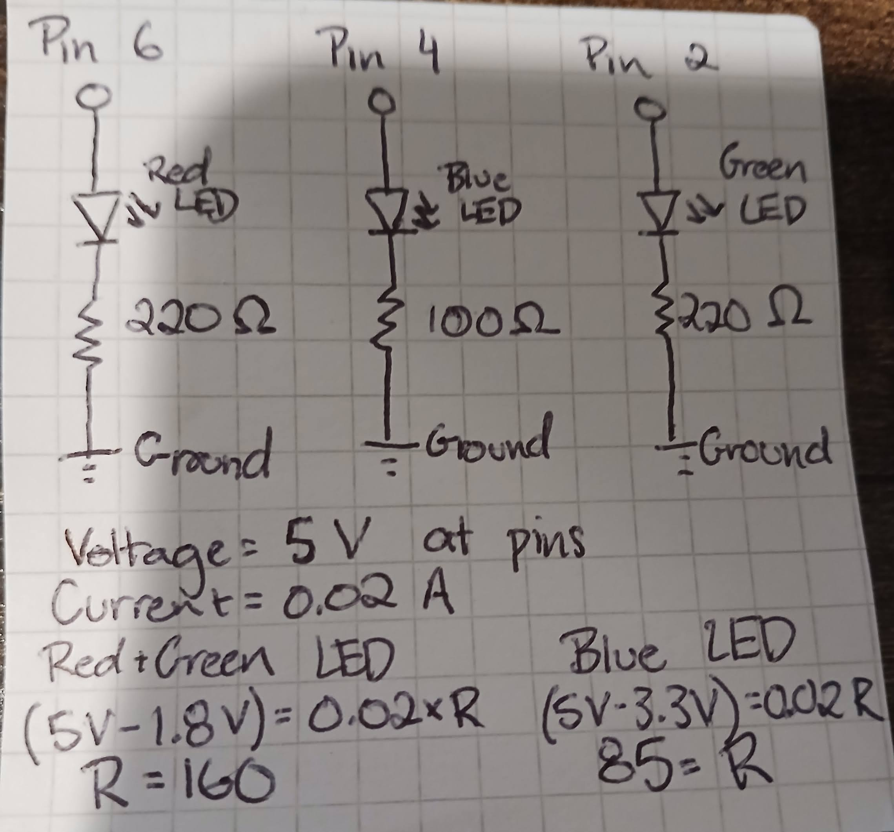

Hand-drawn schematic of all three LED's circuits. Includes resistors, their level of
resistance, and the basic calculations for that level (using V=IR). The voltage supply was 5 V
for all three, the desired current was 20 mA for each, and they all had their own pin attachment
for power. The red and green LEDs used a 1.8 V drop and the blue LED used a 3.3 V drop in the
calculations. A minimum resitance of 160 ohms was needed for the red and green LEDs (gave them 220)
and a minimum of 85 ohms resistance was needed for the blue LED (it was given 100 ohms).
Circuit
The circuit used (on a breadboard) of the blinking LED pattern.
Code
int timer = 100; // The higher the number, the slower the timing.
void setup() {
// use a for loop to initialize each pin as an output:
// using pins 2, 4, 6 only
for (int thisPin = 2; thisPin < 8; thisPin+=2) {
pinMode(thisPin, OUTPUT); //sets each pin as an output
}
}
void loop() {
// loop from the lowest pin to the highest:
for (int thisPin = 2; thisPin > 8; thisPin+=2) {
// turn the pin on:
digitalWrite(thisPin, HIGH);
// keep pin on for set amount of time. More time for higher pin number:
delay(timer * thisPin);
// turn the pin off:
digitalWrite(thisPin, LOW);
}
// loop from the highest pin to the lowest:
for (int thisPin = 6; thisPin >= 2; thisPin-=2) {
// turn the pin on:
digitalWrite(thisPin, HIGH);
// keep pin on for set amount of time. More time for higher pin number:
delay(timer * thisPin);
// turn the pin off:
digitalWrite(thisPin, LOW);
}
}
Question answers
1. Draw a graph where the X axis is time and the Y axis is voltage across the LEDs.
Draw a line for each of your 3 LEDs.
Graph of time vs voltage for all three LEDs. The red LED is the solid black line,
the blue LED is the solid black and yellow line, and the green LED is the dotted line.
2. How many LEDs could you blink independently with your Arduino?
How much current would that draw?
Theoretically you make as many LEDs blink independently as you can connect to the arduino, so
it's limited by how much current the pins can provide. Arduino claims to be able to provide
(safely) up to 40 mA through each pin, so with 13 pins, 520 mA can be provided. But, if you
are blinking only one LED per pin (due to coding challenges), then you are limited by the
number of pins. If assuming 13 pins, you can blink 13 LEDs independently at once, for about
260 mA of current.
3. How fast do you need to blink your LEDs until you no longer can tell they are blinking?
I'm sure it depends on the person, LED color, and resistance level, but for me, with a red LED using a 220
ohm resistor, I stopped being able to tell around 10-15 ms (when the light was on and off for about 10-15 ms
each time.). At 10 ms it was impossible for me to tell, and at 12-15 ms I could just barely. I didn't test
it much beyond that.
4. Did you use AI tools in completing this assignment?
No, I did not use AI tools. There were times I used Google and an AI summary was provided, but I did my best
to find the actual sources of that information rather than just reading the summary.